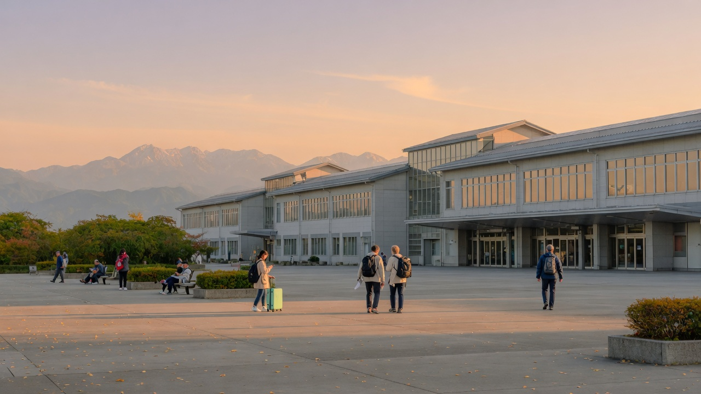

10/1 · 富山
01 / 海与山之间
富山：药盒、玻璃与海湾的味道
富山不只是翻越立山前的一站。这里长期以卖药闻名：行商把药放进各地人家，等下次来访时再按用掉的份量收钱。制药所需的玻璃容器，也让玻璃工艺在富山扎下根；今天的玻璃美术馆，是这段老手艺的现代版本。
晚餐若见到白虾，可以想起富山湾的渔业。它被称作“富山湾的宝石”，也是这里把山、河与海连接起来的一口鲜味。你们抵达时间较晚，不必为文化景点专程绕路，先在车站附近吃一顿当地料理。
到了现场看：车站商店里留意玻璃工艺品、鱒寿司和白虾料理；这些比赶景点更贴合第一晚的节奏。
延伸阅读：富山官方旅游 · 工艺与设计 · 富山饮食
10/2 · 室堂微库里池
02 / 圣山与工程
立山黑部：一次翻山，看到两种日本
立山很早就是山岳信仰中的圣山。过去进山，意味着敬畏地面对雪、岩石和火山地形；如今从富山到长野，一路换缆车、巴士、索道与电动巴士，游客也能跨过山脉。整条立山黑部阿尔卑斯路线在 1971 年贯通，这些交通设施本身就是值得看的工程作品。
室堂的微库里池让人感到山的安静；另一侧的黑部水坝，则把山里的水转化为现代社会所需的能源。一天内从宗教想象走到工业建设，是这条路线有意思的地方。翻山当天仍应优先保证接驳，不为拍照错过下山交通。
到了现场看：室堂先看微库里池与山体地形；乘索道时看深谷，走过水坝时再回望这套山地交通如何衔接。
延伸阅读：立山黑部官方 · 开发史 · 沿线地标
10/3 · 上高地
03 / 山路怎样成为风景
上高地：从进山谋生，到为了山而来
如今沿梓川散步很轻松，但当地人过去进山，更多是为狩猎、伐木或信仰。19 世纪末，英国人沃尔特·韦斯顿在当地向导上條嘉門次带领下走进北阿尔卑斯，并通过著作向世界介绍这里。山也逐渐成为人们愿意专程来欣赏、攀登和保护的地方。
所以河童桥的意义不只是一张明信片：桥、河流与穗高连峰，构成了日本近代登山文化最容易辨认的画面。如果实际路线经过韦斯顿碑，可以停下来想一想：没有熟悉山的人，外来登山者便无法读懂这片地形。
到了现场看：从河童桥看梓川与穗高；若按当天路线经过韦斯顿碑，再读碑旁介绍。不要为绕行影响 16:40 的返程票。
延伸阅读：上高地官方 · 历史 · 韦斯顿碑
04 / 一条不能随意开车的山路
乘鞍：把公路留给山，也把山留给人
从乘鞍高原往畳平的 Echo Line，私家车在高海拔路段受到限制，游客主要乘接驳车上山。班车将人带到约 2700 米高度，既让普通游客接近高山，也提醒人们这里仍受天气和道路状况支配。它和前一天的上高地一样，值得留意“怎样进入自然”这件事。
到了现场看：沿车窗观察植被随海拔变矮；到了畳平只按天气和体力选短线，不把登顶当作必须完成的任务。
延伸阅读：乘鞍观光协会 · 乘鞍岳与 Echo Line
10/5 · 松本城
05 / 一座被留下来的城
松本：黑色天守里，藏着市民的选择
松本城起于战国时代，现存天守是日本少见的古城原构之一：外面看五层，里面实际有六层。它不是后来为了观光新造的一座城。明治时期废藩之后，城一度面临拆除，最终靠当地人的保存努力留下来。
走入天守，比看外观更能明白它原本的用途：陡峭楼梯、狭窄通道和防御设施都服务于战时需求。城下的街道则延续了日常生活；如果上午时间宽裕，绳手通或中町通短走一段就够了。
到了现场看：先绕护城河看黑色外墙与倒影，再进天守观察“外五内六”的层数差异；按下午去新宿的车次控制排队时间。
延伸阅读：松本城官方 · 历史与结构
10/6 · 银座
06 / 购物日也可以读城市
银座：从砖街到橱窗
银座的“新潮”有历史。1872 年大火后，明治政府把这里改建成有宽阔街道、砖造建筑和煤气灯的近代街区。随后铁路、百货店和咖啡馆聚集，逛银座本身渐渐变成一种都市体验。今天购物时，不妨抬头看看街道尺度、老店与新建筑如何并排。
到了现场看：经过银座四丁目路口时留意建筑立面与街角；购物清单仍按行程优先。
延伸阅读：GINZA OFFICIAL · 银座历史